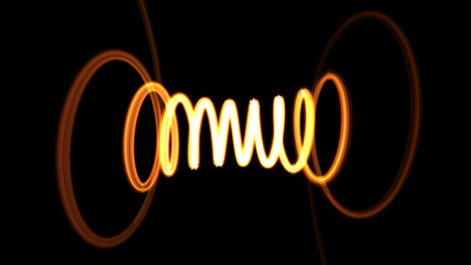

Line Waves: 2.0Line Waves (size: 314Kb) version: 2.0
Description
Price: $10.00.
Publisher: abDyne.
Description:[Example1|
Example2|
Example3]
LineWaves offers simple and quick runtime-based rendering of LineRenderer waveforms with the following features:
-2D osciloscope spectrum form;
-3D spiral/tunnel form;
-Warp (collapsed start/end of waveforms);
-Inverted Warp (to-infite start/end of waveforms);
-Randomize wave (in Warp-mode);
-Walk parameters (auto and manual);
-Chooseable origin of wave (side/centered | knot/crest);
-Basic frequency and amplitude parameters;
-Target-follow enabled;
-No LineRenderer-tweaking needed;
-Collision generator at runtime (box/sphere);
-Gapping and resizeable colliders;Extra Images
